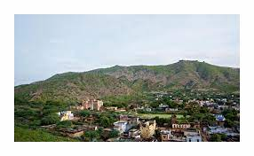

Welcome to my Village
A peaceful village near Neem Ka Thana, Rajasthan — rich in culture, agriculture and warm hospitality.
About Yodha Village
Yodha Village is a traditional Rajasthani village close to Neem Ka Thana (Sikar district). The village is known for its close-knit community, local festivals, and traditional crafts. Life here centers around agriculture, community events and family traditions.
Key facts
- Region: Near Neem Ka Thana, Sikar district, Rajasthan
- Languages: Hindi, local dialects
- Cultural highlights: Annual fairs, temple festivals, folk music
- Facilities: Panchayat office, primary school, small shops
For cultural visits or local coordination, contact the village office via the contact section below.
Population
Estimated population: ~2,500 (approximate). The community is diverse in age groups with strong family ties.
Demographic breakdown (approx.)
- Children (0-14 years): ~30%
- Working age (15-59 years): ~60%
- Seniors (60+ years): ~10%
- Average household size: 5–7 members
For exact and updated census figures, please contact the local panchayat or district statistical office.
Occupation
The village economy relies mainly on:
- Agriculture: Wheat, mustard, bajra and seasonal vegetables are common crops.
- Animal husbandry: Cattle, goats and dairy production.
- Local trades: Small shops, carpentry, pottery and craft-making.
- Nearby employment: Some residents commute to Neem Ka Thana, Sikar or Jaipur for work.
There are growing initiatives for small-scale tourism and handicraft promotion to diversify incomes.
Images
Click an image to open a larger view.
.jpg)
.jpg)
.jpg)
Images show local landmarks, fields and community events. Replace image files in the project folder as needed.
Location — Neem Ka Thana, Rajasthan
Neem Ka Thana is in Sikar district. Yodha Village is in the surrounding rural area — accessible by road from Neem Ka Thana, Sikar and Jaipur.
How to reach
By road: Regular buses and private taxis from Neem Ka Thana and Sikar.
Nearest railway: Sikar Junction (approx. 40–60 km depending on route).
Nearest airport: Jaipur International Airport (~120 km).
Use "Neem Ka Thana, Rajasthan" in GPS or Google Maps for directions.
Why Choose Yodha Village
Visit or collaborate with the village for:
- Authentic rural experience: Traditional food, festivals and local hospitality.
- Safety & community: Family-friendly and welcoming residents.
- Agro-tourism potential: Learn farming practices and participate in activities.
- Handicrafts & culture: Purchase locally made goods and support artisans.
We welcome responsible visitors and partners interested in sustainable development and cultural exchange.
Contact
Village Office: Yodha Village Panchayat
Phone: +91-XXXXXXXXXX
Email: info@yodhavillage.example
Address: Yodha Village, Near Neem Ka Thana, Sikar District, Rajasthan, India